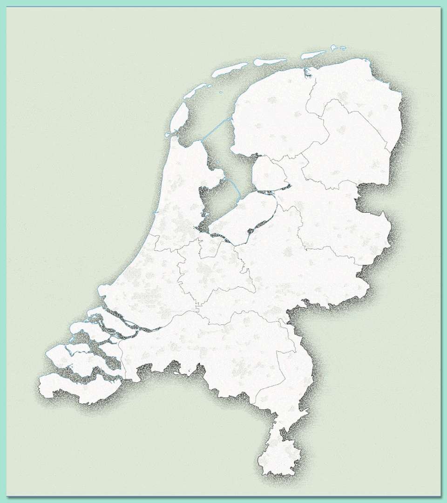

Een voorbeeld van de gallery-component met afbeeldingen en korte videoclips door elkaar. Navigeer met de pijlen.

Hoe gebruik je dit in je casepagina's?
Kopieer het blok <div class="gallery" id="gallery-XXX"> naar je casepagina. Verander het id naar iets unieks per gallery (bijv. gallery-klimaat). Voeg ook het <script> blok onderaan toe. Elk .gallery-item is één slide — voeg er zoveel toe als je wilt. Voor video: zet het MP4-bestand in je images/ map en pas src aan.